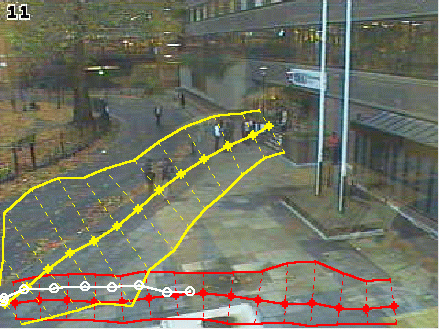

|
|
| |
|  |
| Out of step: an atypical journey (in green) catches the computer’s attention |
THE GRAINY IMAGES of surveillance cameras have an almost comforting quality – they are not watching us, just watching out for us, in case we go missing, or drive the wrong way down a motorway. In any case, it’s only bored security guards or mute video recorders who are minding our private business: our wanderings are, mostly, unremarkable and unremarked.
The next generation of surveillance systems will not, however, be quite so frail. The humans watching CCTV will soon be assisted by vigilant machines, watching out for unusual patterns of behaviour, and perhaps able even, in certain scenarios, to recognize our individual faces.
However we view the prospect, we can be certain that our futures will unfold beneath the gaze of computers. Machine vision technology (MVT), a branch of IT focused on developing sophisticated computer analysis of visual images, is rapidly teaching machines to see, and interpret, everything from butterfly wings to marine debris, and the subtleties of human facial expressions and hand gestures.
The British Machine Vision Conference, September 2002, at Cardiff University, explored this esoteric world of algorithms and probabilistic models, and outlined some of the emerging applications of MVT.
Pedestrian patterns
The security staff watching CCTV screens in underground stations and shopping malls have little chance of picking out unusual or dangerous activities from the humdrum ebb and flow of pedestrians. Engineers at City University are developing MVT programs that learn the normal patterns of pedestrian movement, say over the length of a typical day, and then identify atypical trajectories – the computer can alert the human operators about this unusual behaviour at the moment it takes place, rather than simply recording it for posterity.
Sergio Velastin of Kingston University, who has worked on developing surveillance software for London Underground, said: “You have an explosion of CCTV cameras, with no one looking at them. If you’re looking at improving security in a public place you usually want to prevent things from happening.” The trick is to teach the computer to look out for clues. Velastin added: “If there are too many people in an area, that could cause a problem. You’re looking for a very quick build-up, and you want to alert the person behind the camera. Or if a person is not taking a train, if they’re loitering for a long time, it might be someone wanting to do something like jump in front of the train.”
Reading gestures
Researchers at Oxford University’s Department of Engineering Science have developed an MVT system capable of reading sign language in real time, and with astonishing accuracy. Raymond Lockton and Andrew Fitzgibbon taught a 600Mhz notebook computer to read 46 gestures, including the American sign language letterspelling alphabet and digits, and mouse movement equivalents for actions such as drag-and-drop. Demonstrations of the system, in which it was used to edit documents and perform operations in a windowed operating system, achieved accuracy rates of over 99 percent.
The researchers found that by simplifying the visual information processed by the computer, the system could achieve much faster recognition rates: 15 frames per second, as against one minute per frame for MVT systems processing images in full detail. The principle, described as “brute-force template-matching”, obliges the computer to resolve approximations, making the ‘best guess’ as to the meaning of each of the
user’s
gestures. The
user,
who wears a simple wristband but no gloves or finger bands, is able to operate the computer by gesture alone.
Undersea objects
Marine archaeologists and wreck investigators use unmanned submersibles fitted with video cameras to inspect the seafloor. The task of viewing hours of video footage from multiple cameras, most of it of no interest, is mostly done manually – a laborious but unavoidable task for scientists in the aftermath of missions. To reduce this task, engineers at Heriot Watt University are developing an automatic vision system, capable of identifying manmade objects among the shapes recorded on the footage.
The system will need to function in a range of difficult imaging conditions – in both natural and artificial light, and in water with varying degrees of turbidity – and detect unspecified targets: generic manmade objects. The developers aimed for a standard of accuracy which would reduce false negatives – missed objects – to practically zero, while allowing for a certain ratio of false positives – a minimum 75% accuracy.
The Heriot Watt system uses the characteristic differences between manmade and natural contours to distinguish its targets. Long contours and simple geometric shapes are typical of manmade structures; short, tortuous and jagged contours of natural forms. The scale of the image can be varied, to identify both shorter manmade contours, and the courser contours of artificial structures covered by marine growth.
The engineers reported the results of system testing to the BMV Conference. Put to its task of watching five interminable underwater videos, with varying image contents and the broadest of classification tasks, the MVT system classified correctly approximately 85 percent of 1390 test images.
|
| |
Relevant Information
|
|